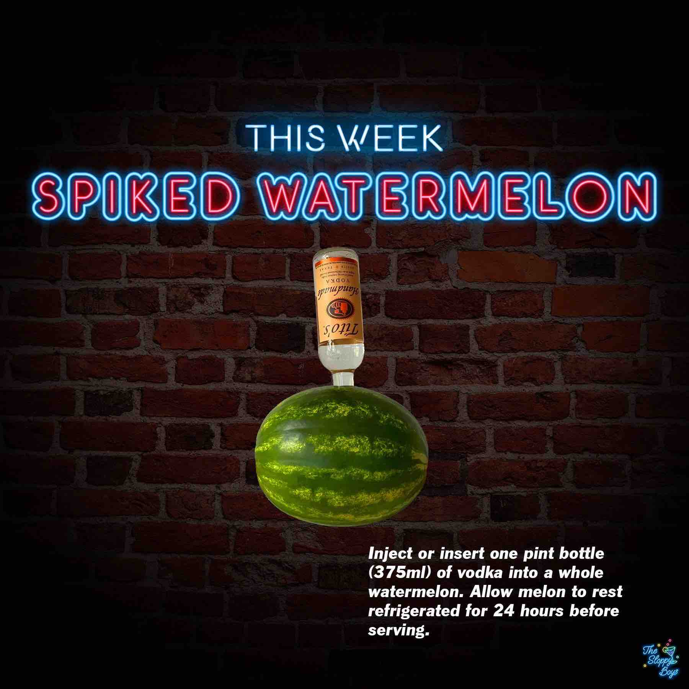

Sloppy Drinks
Podcast
About

Spiked Watermelon
Ingredients
Vodka (1 pint/375ml)
Watermelon (1 whole)
Steps
Inject or insert one pint bottle (375ml) of vodka into a whole watermelon.
Allow melon to rest refrigerated for 24 hours before serving.
Notes
Episode 147 - Spiked Watermelon (August 11, 2023)
Artwork by The Sloppy Boys